Vintage Mountain Cabins Since 1965
The Cabins at Cloudcroft is a small, owner-operated cluster of vintage knotty-pine cabins on Coyote Avenue. The cabins were built in 1965 and reopened under current ownership in 2020 by Karl and Laura Campbell (Trestle Properties Inc.). Karl — a retired U.S. Army Chief Warrant Officer with long family ties to the Sacramento Mountains — and Laura still answer the phone themselves.
Every cabin has a real wood-burning fireplace or wood stove, a full kitchen with range, microwave, refrigerator, and coffee pot, a flat-screen TV, and free Wi-Fi. Original knotty-pine walls and ceilings remain, and several cabins still have their 1960s metal kitchen cabinets — a vintage character you won't find in a hotel. Outside, an outdoor pavilion with a karaoke system and Adirondack chairs sits among the pines, where guests regularly see elk and deer.
The property is within walking distance of Burro Street — Cloudcroft's main street for shops, restaurants, and galleries — and close to Lincoln National Forest trails, Trestle Recreation Area, and Ski Cloudcroft.
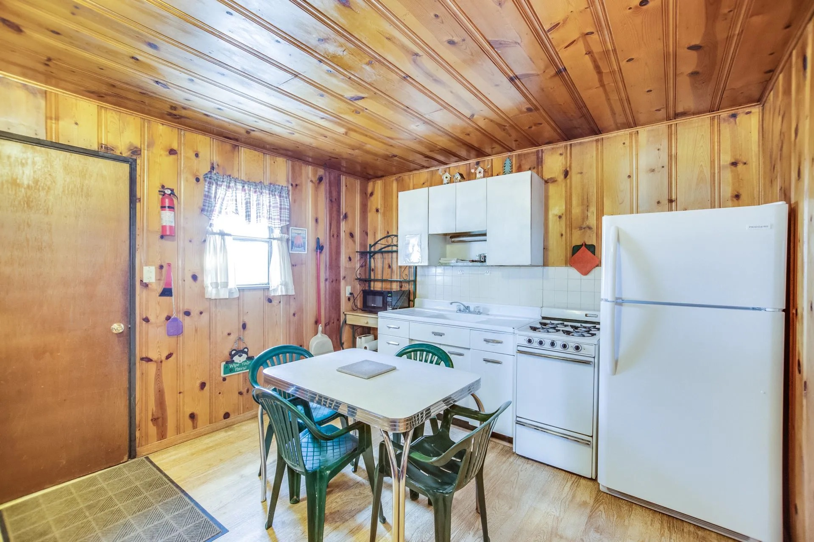
A Look Around
Cabins, interiors, fireplaces, and the pines of Cloudcroft.
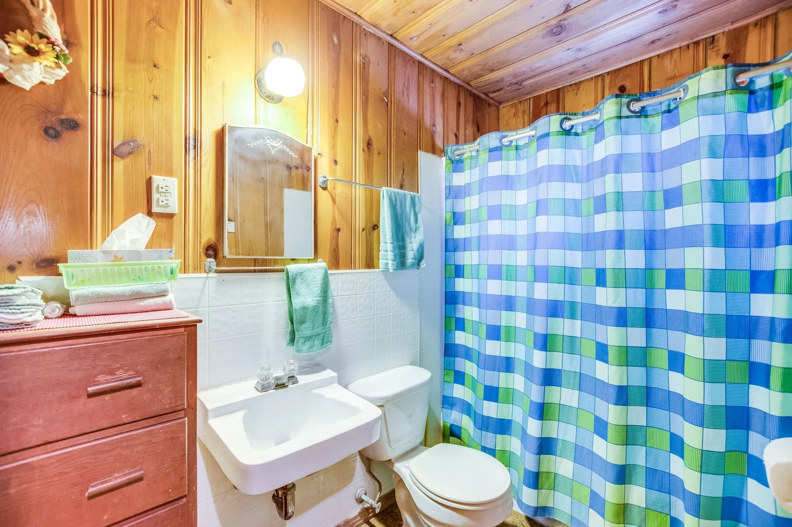
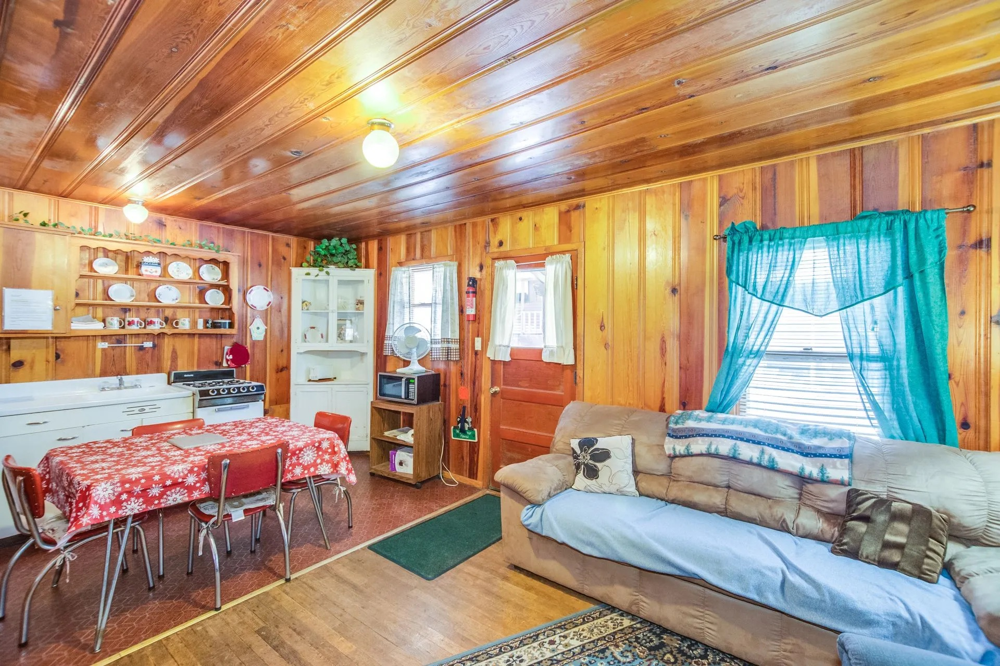
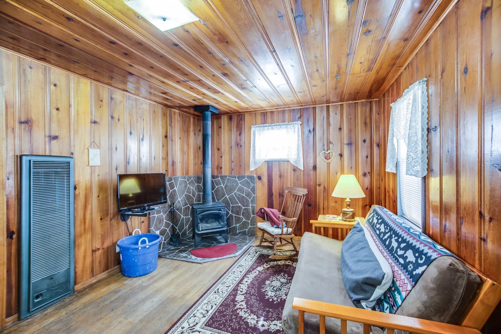
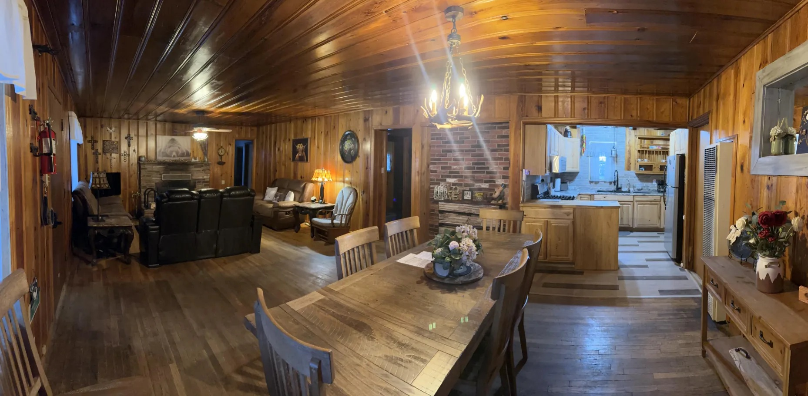
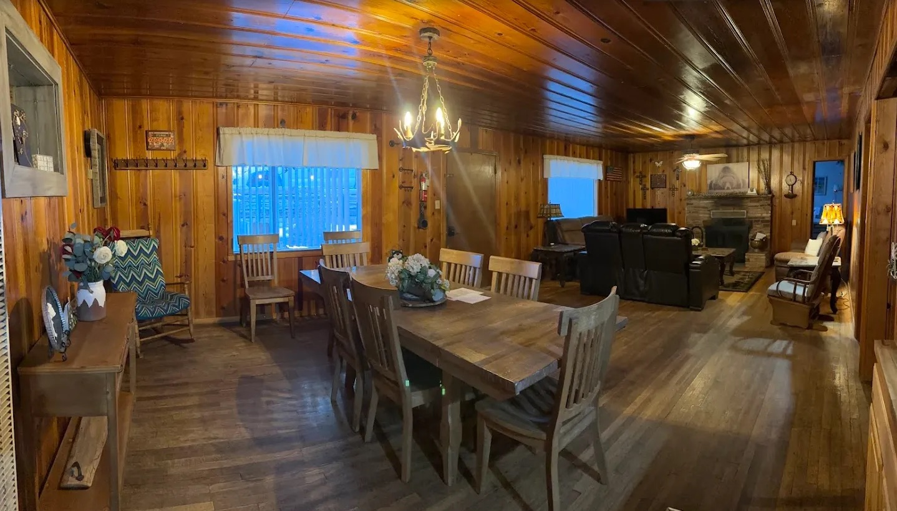
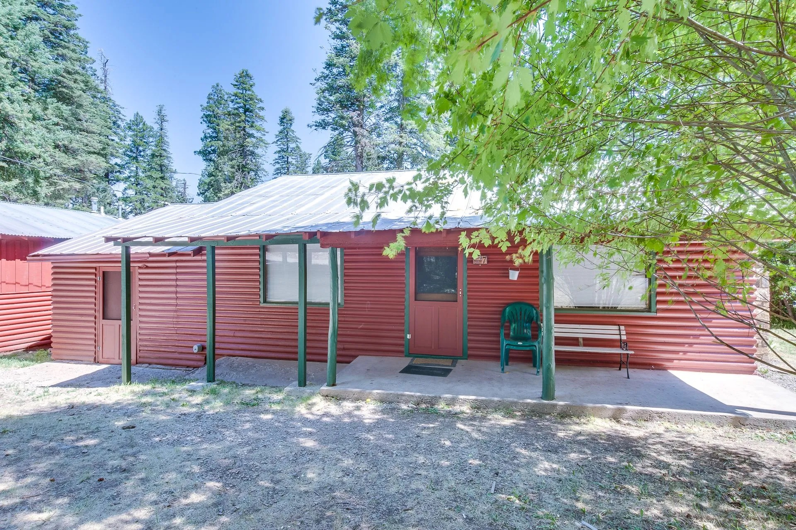
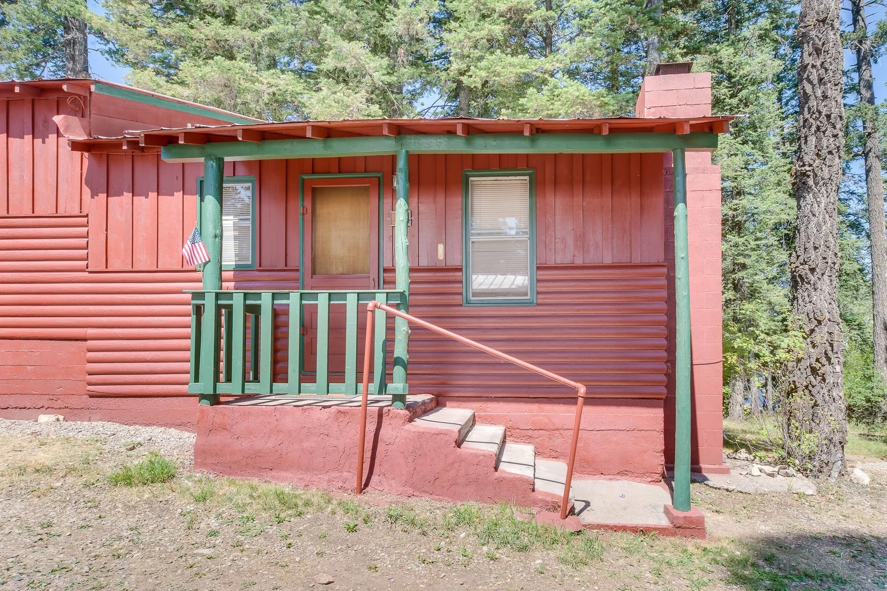
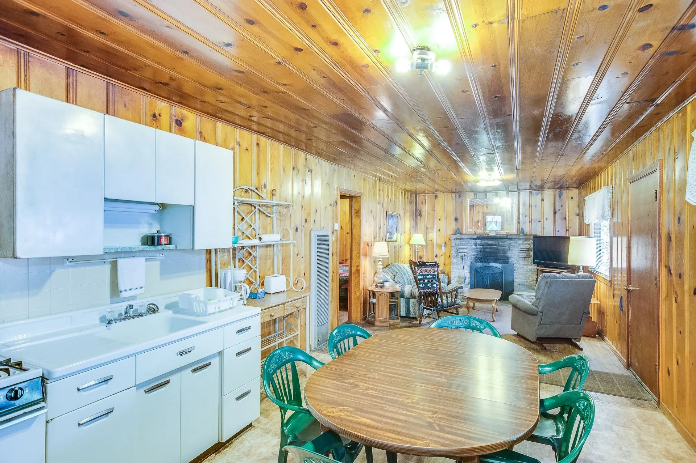
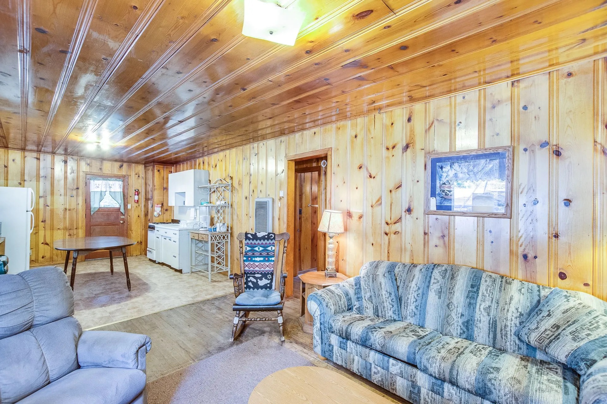

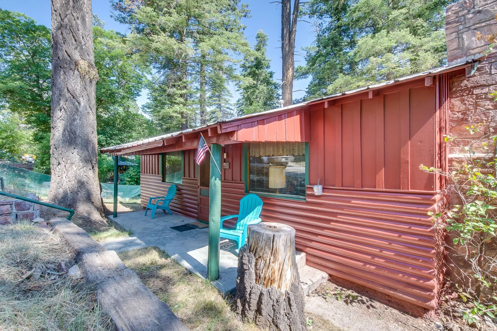
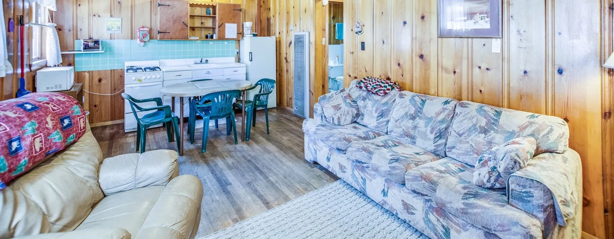
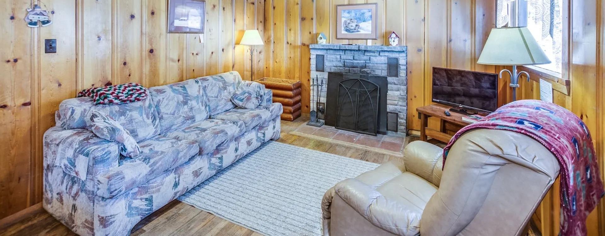

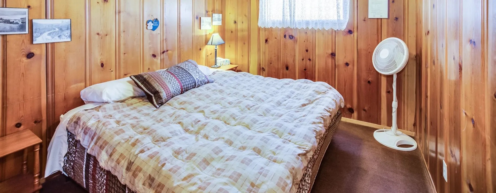
15 to 16 Individual Cabins
Every cabin is a little different. All share wood-burning fireplaces or wood stoves, full kitchens, flat-screen TVs, and original knotty-pine interiors.
| Cabin Type | Bed Configuration | Good For | Included |
|---|---|---|---|
| One-Bedroom | King bed | Couples, solo travelers | Fireplace or wood stove, full kitchen, TV, Wi-Fi |
| Two-Bedroom | King + two doubles (configurations vary) | Small families, friends | Fireplace, full kitchen, living area, TV, Wi-Fi |
| Four-Bedroom (Cabin 16) | Four bedrooms, two bathrooms | Groups, family reunions | Fireplace, full kitchen, multiple living spaces, TV, Wi-Fi |
Sources disagree on exact cabin count (15 vs. 16). Confirm the specific cabin, bed configuration, and amenities with the owners before booking.
The Cabin Experience
What makes The Cabins at Cloudcroft a cherished mountain tradition since 1965.
Real Wood-Burning Fireplaces
Every cabin has a wood-burning fireplace or wood stove — not a gas insert. Few places in Cloudcroft deliver that crackle-and-smoke experience in every single unit.
Full Kitchens In Every Cabin
Gas range, microwave, refrigerator, coffee pot. A few cabins still have their original 1960s metal cabinets. Cook in or walk to Burro Street — you get to choose.
Elk & Deer At Your Door
Wildlife roam the property among the pines. During the fall rut, guests sit under the pavilion and listen to bull elk bugling back and forth across the canyon.
Outdoor Pavilion & Karaoke
A covered outdoor pavilion with a karaoke system and Adirondack chairs — a gathering spot for groups, families, and strangers-turned-friends.
1965 Knotty-Pine Character
Original knotty-pine walls and ceilings run through every cabin. It's the kind of cabin your grandparents might have rented — and it still feels that way, on purpose.
Owner-Operated
Karl and Laura Campbell answer the phone themselves. Reviews repeatedly describe cleanliness and hands-on attention — the hallmark of a small property done right.
Under the Pines, Above the Village
The cabins sit among tall pines at roughly 9,000 feet in Cloudcroft, a short walk from Burro Street. Elk and deer regularly move through the property. Adirondack chairs and a covered pavilion give guests places to gather beyond their individual cabins.
The setting is quiet without being remote. Lincoln National Forest trails, the Trestle Recreation Area, Ski Cloudcroft, and the village's shops and restaurants are all within easy reach — and White Sands National Park is about an hour's drive west down the mountain.
Cook In, Walk Out
No on-site restaurant — by design. Every cabin has a full kitchen, and Burro Street is a short walk away.
Full Kitchens
Small gas range, microwave, refrigerator, coffee pot. Cookware is typically included — confirm item-by-item with the owners if you plan to cook elaborate meals.
BBQ Under the Pavilion
The outdoor pavilion is set up for grilling and group meals — bring meat, sides, and a few folding chairs for bigger gatherings.
Grocery Planning
Cloudcroft's village has small in-town options; the nearest substantial grocery is in Alamogordo, about 20 miles down the mountain. Stock up on your way in.
Walk to Burro Street
Burro Street restaurants and cafes are a short walk from the property — a real option for dinner without moving the car.
From 1006 Coyote Ave
Cloudcroft's top attractions, all within easy reach of the cabins.
Burro Street Village
Cloudcroft's main street — a short walk from the property. Shops, galleries, restaurants, ice cream, and the village's small-town atmosphere.
Trestle Recreation Area
The Mexican Canyon Railroad Trestle — built in 1899 and one of southern New Mexico's most photographed landmarks — is a short drive from the cabins.
Ski Cloudcroft
The southernmost ski area in the United States. A quick drive in winter, with sledding and snow play popular at the village edge as well.
White Sands National Park
About 60 miles west, down the mountain. Early morning or sunset visits offer the best light on the gypsum dunes — a classic Cloudcroft day trip.
Before You Book
Key policies and practical details. Confirm specifics directly with the owners.
Location
1006 Coyote Ave, Cloudcroft, NM 88317 (Yelp lists 1008 Coyote Ave — same small property; confirm directly). Walking distance to Burro Street.
Check-In / Check-Out
Third-party listings cite 3:00 p.m. check-in and 10:00 a.m. check-out, with early or late requests accommodated when possible. Confirm directly.
Rates & Booking
One-bedroom cabins from about $113/night per prior DiscoverCloudcroft listings; seasonal and minimum-stay rules likely apply. Book direct at cabinsatcloudcroft.com.
Pets & Policies
Pets allowed on request. Third-party listings cite $25/stay for up to 2 pets, a 25-pound weight limit, leash requirement, and a $100 fee if a dog is left unattended. Verify directly.
Contact & Book
Owner-operated — Karl or Laura will pick up the phone.
Address
1006 Coyote Ave
Cloudcroft, NM 88317
Phone
Website
Owners
Karl & Laura Campbell
Trestle Properties Inc.
Social
Crackling Fire. Full Kitchen. Elk Outside.
Vintage 1965 knotty-pine cabins, owner-operated, with wood-burning fireplaces, full kitchens, an outdoor pavilion with karaoke, and Burro Street a short walk away.